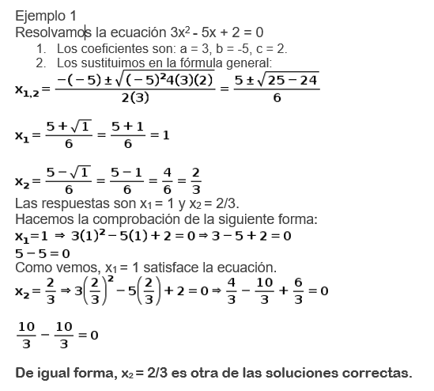

ECUACIONES CUADRATICAS
Las ecuaciones cuadráticas o ecuaciones de segundo grado son aquellas en donde el exponente del término desconocido está elevado al cuadrado, es decir, la incógnita está elevada al exponente 2. Tienen la forma general de un trinomio:
ax2 + bx + c = 0
donde a, b y c son números reales y se conocen como coeficientes. Así, a es el coeficiente de x2, b es el término o coeficiente de x y c es el término independiente.
Si a = 1, la ecuación cuadrática es reducida. Si a = 0, entonces deja de ser una ecuación de segundo grado, y se transforma en una ecuación de primer grado:
bx + c = 0
Tipos de ecuaciones cuadráticas
Las ecuaciones cuadráticas pueden ser completas o incompletas, dependiendo de si existen los términos dependientes de x (b) o independiente (c).
· Ecuaciones completas de segundo grado
Las ecuaciones completas de segundo grado tienen la forma ax2 + bx + c = 0, es decir, todos los términos se encuentran presentes; por ejemplo:
2x2 + 3x + 4 = 0
En este caso a = 2, b = 3 y c = 4.
x2 + 10x + 20 = 0
En este caso a = 1, b = 10 y c = 20, pues el (-20) del lado derecho de la ecuación pasa al lado izquierdo cambiando de signo, así:
x2 + 10x + 20 = 0
· Ecuaciones incompletas de segundo grado
Cuando no existe el coeficiente de x, es decir, el término b, la ecuación toma la forma:
ax2 + c = 0
Ejemplos:
27x2 – 9 = 0 ⇒ a = 27, c = 9
12x2 = - 6 ⇒ a = 12, c = 6
Cuando no existe el término independiente, es decir, el término c, la ecuación tiene la forma:
ax2 + bx = 0
Ejemplos:
48x2 + 8x = 0 ⇒ a = 48, b = 8
-5x2 = -5x ⇒ a = - 5, b = 5
¿Cómo resolver ecuaciones cuadráticas paso a paso?
Para resolver una ecuación de segundo grado usando la fórmula general, vamos a proceder de la siguiente manera:
- Identificamos los coeficientes a, b y c.
- Los sustituimos en la fórmula general.
- Calculamos x1 sumando el discriminante, y x2, restando el discriminante.
Debemos tener en cuenta que:
b2 – 4 (a)(c) = 0
⇒ solo hay una raíz para la ecuación.
b2 – 4 (a)(c) >0
⇒ hay dos raíces con números reales.
b2 – 4 (a)(c) < 0
⇒no hay una solución real.
